版面配置 (15)
GoScaffold
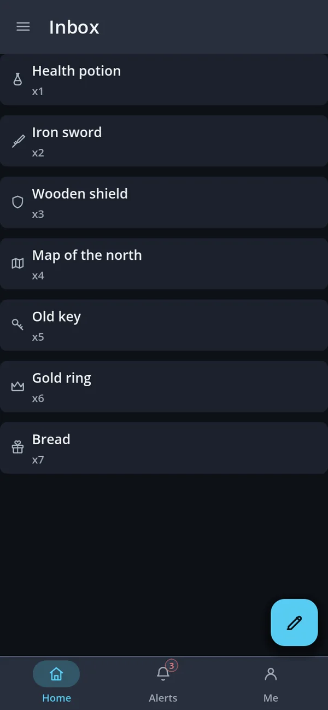
一次組好 App 畫面：頂欄、捲動頁面、底欄、FAB 與抽屜。
繼承 Control
var page := GoStyle.column()
var screen := GoScaffold.make("Inbox", page, true)
screen.set_fab(GoFab.make(GoIconSet.EDIT))
add_child(screen) GoTopBar
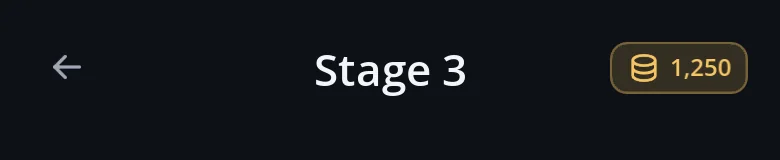
沿頂邊排列的 1～3 個槽位，中間槽始終置中。
繼承 GoEdgeBar
var bar := GoTopBar.make(3)
bar.add_start(GoStyle.icon_button(GoIconSet.BACK, go_back, -1, &"back"))
bar.add_center(GoStyle.label("Stage 3"))
bar.add_end(GoStyle.chip("1,250")) GoBottomBar
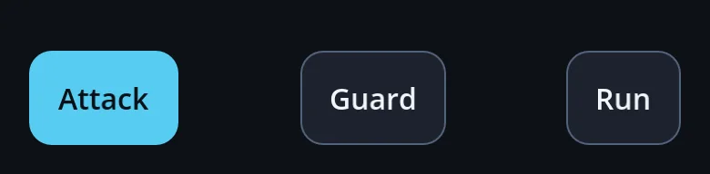
沿底邊排列，避開手勢列。
繼承 GoEdgeBar
var actions := GoBottomBar.make(1, GoBottomBar.Justify.SPACE_BETWEEN)
for name in ["Attack", "Guard", "Run"]: actions.add_start(GoStyle.button(name))
screen.add_child(actions) GoLeftSideBar
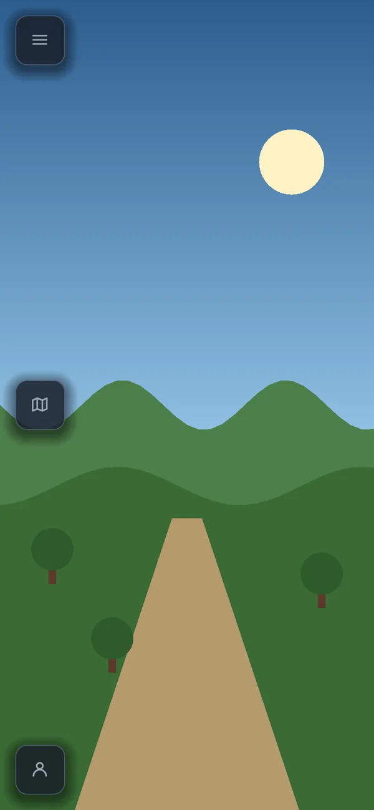
沿左邊最多三層。
繼承 GoSideBar
var tools := GoLeftSideBar.make(3)
tools.add_start(GoStyle.icon_button(GoIconSet.MENU, open_menu, -1, &"menu"))
tools.add_end(GoStyle.icon_button(GoIconSet.USER, open_profile, -1, &"profile"))
screen.add_child(tools) GoRightSideBar
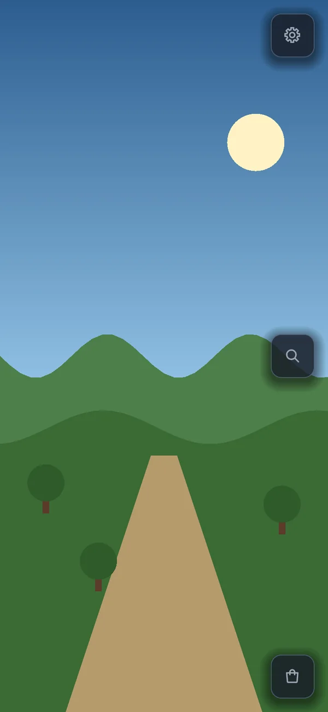
沿右邊最多三層。
繼承 GoSideBar
var tools := GoRightSideBar.make(3)
tools.add_start(GoStyle.icon_button(GoIconSet.SETTINGS, open_settings, -1, &"settings"))
tools.add_center(GoStyle.icon_button(GoIconSet.SEARCH, find, -1, &"search"))
screen.add_child(tools) GoSideBar
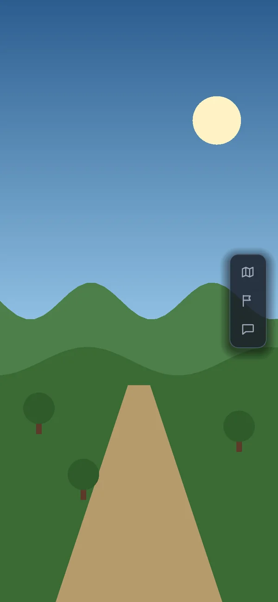
上面兩者的基礎側欄；在由右至左的語言中也保持原側。
繼承 GoEdgeBar
var rail := GoRightSideBar.make(1, GoSideBar.Justify.CENTER)
rail.add_start(GoStyle.icon_button(GoIconSet.MAP, open_map, -1, &"map")) GoEdgeBar
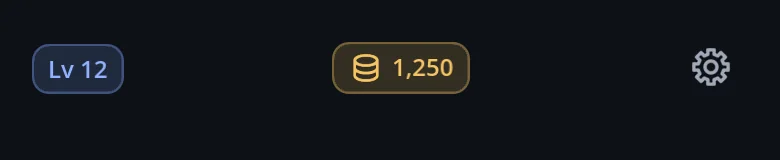
所有邊欄共用的規則：槽位、平均分布、貼邊與安全區域。
繼承 Container
var bar := GoTopBar.make(1)
bar.justify = GoEdgeBar.Justify.SPACE_BETWEEN
bar.pin_to_edge = GoEdgeBar.Pin.ALWAYS GoGrid
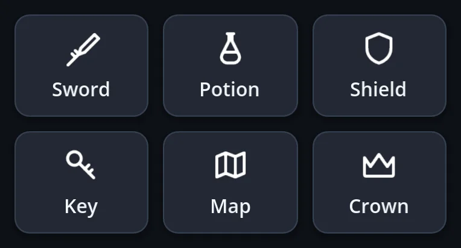
寬度完全相同的欄——固定數量，或能放多少放多少。
繼承 Container
var cards := GoGrid.make(1, 160.0)
for item in items: cards.add_child(GoStyle.item_card(item)) GoForm
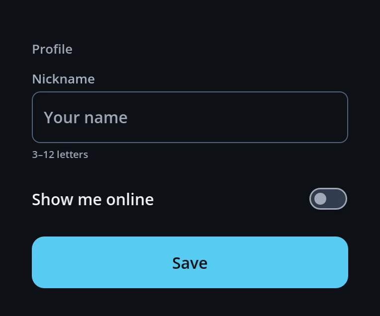
限制寬度並避開鍵盤與 HUD 的表單。
繼承 MarginContainer
var form := GoForm.new()
form.avoid_hud = true
form.add_child(GoScroll.new())
add_child(form) GoScroll
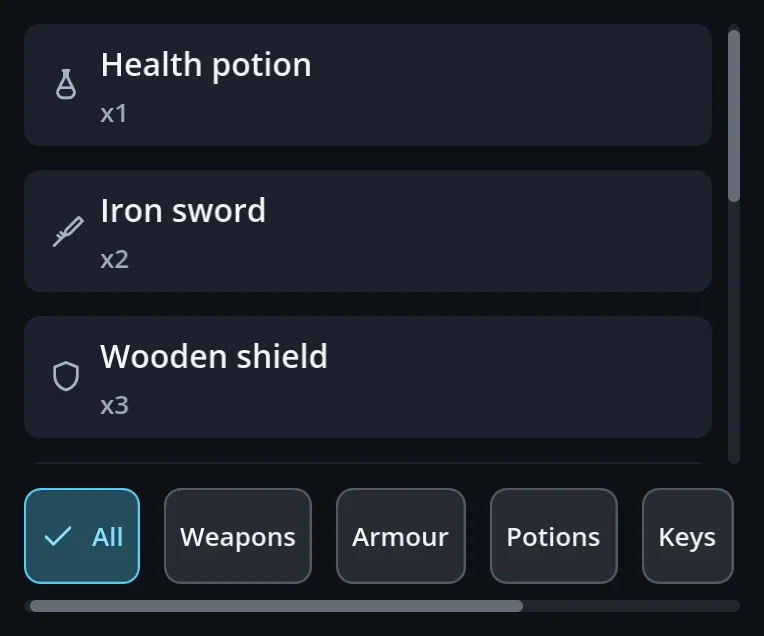
從內容任意位置都能觸控捲動，支援由右至左的語言。
繼承 ScrollContainer
var list := GoScroll.new()
list.add_child(GoStyle.column())
var strip := GoScroll.horizontal() GoHudAnchor
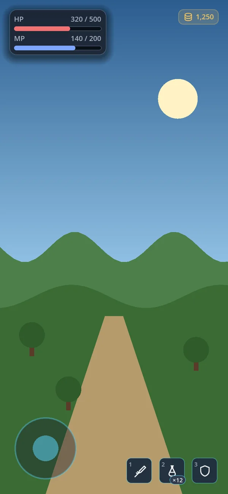
把 HUD 元件固定在安全區域的九個位置之一。
繼承 Control
var corner := GoHudAnchor.new()
corner.spot = GoHudAnchor.Spot.TOP_LEFT
corner.add_child(GoStyle.hud_panel()) GoStyle.column · row · wrap_row
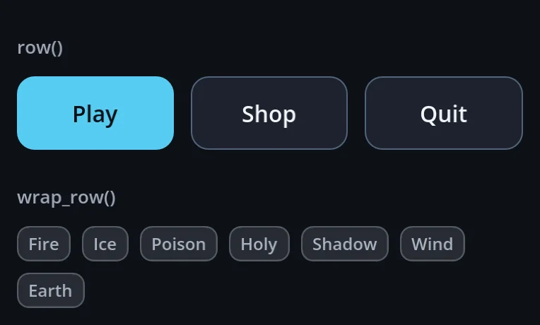
使用主題間距的欄、列與自動換行的列。
所屬 GoStyle
var page := GoStyle.column()
var line := GoStyle.row()
var chips := GoStyle.wrap_row() GoStyle.responsive_grid · aspect
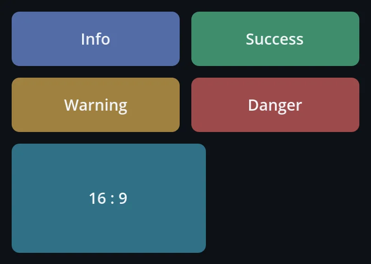
變寬時增加欄的網格，以及保持比例的方塊。
所屬 GoStyle
var tiles := GoStyle.responsive_grid(160)
var thumb := GoStyle.aspect(16.0 / 9.0) GoStyle.padding · spacer · divider
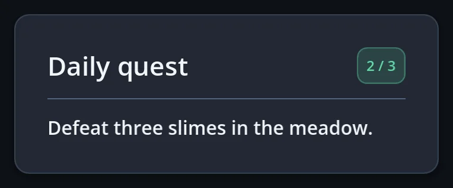
內距、佔滿剩餘空間的間隔與分隔線。
所屬 GoStyle
var pad := GoStyle.padding(16)
line.add_child(GoStyle.spacer())
page.add_child(GoStyle.divider()) GoStyle.foldable · section
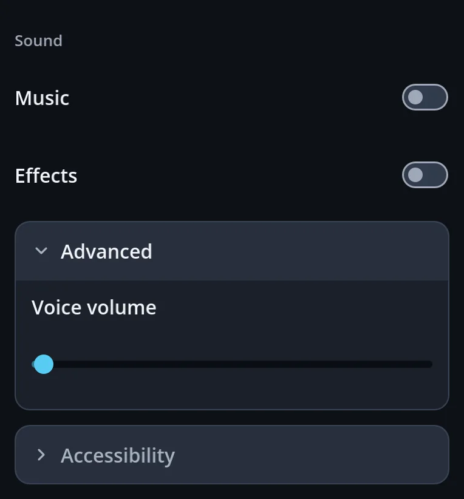
區段標題，以及可展開收合的區段。
所屬 GoStyle
page.add_child(GoStyle.section("Sound", false))
var more := GoStyle.foldable("Advanced", true, null, false) 視窗與浮層 (9)
GoSurface

浮動視窗——置中、從底部彈出，或貼靠某個控制項。
繼承 Control
var window := GoSurface.new()
window.set_title("Settings")
window.close_requested.connect(window.queue_free)
layer.add_child(window) GoSheet

具分頁、返回導覽與固定底欄的底部面板。
繼承 CanvasLayer
var sheet := GoSheet.new()
add_child(sheet)
sheet.open("Inventory")
sheet.body.add_child(bag_list) GoDialogs

可 await 的確認與提示視窗；提示會排隊等候。
繼承 Node
var dialogs := GoDialogs.new()
add_child(dialogs)
if await dialogs.confirm("Delete save", "This cannot be undone.", "", "", "", {}, true):
delete_save() GoDialogs.choose
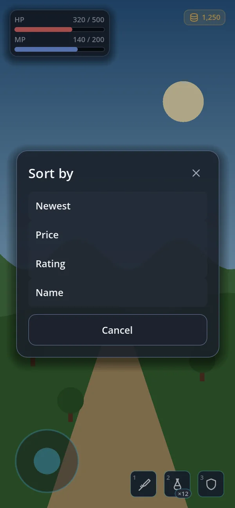
從幾項中選一項——手機上是底部面板，桌面上是卡片。
所屬 GoDialogs
var index := await dialogs.choose("Sort by", ["Newest", "Price", "Rating"])
if index >= 0: sort_by(index) GoDrawer
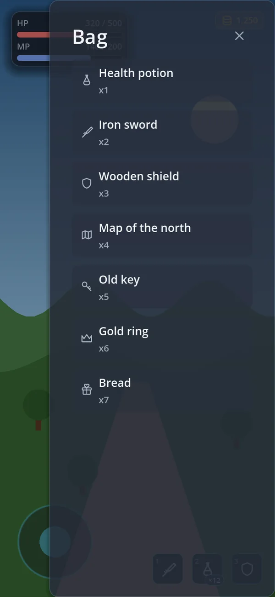
從左側或右側滑入的面板。
繼承 CanvasLayer
var drawer := GoDrawer.new()
add_child(drawer)
drawer.side = GoDrawer.Side.RIGHT
drawer.open("Bag") GoPopover
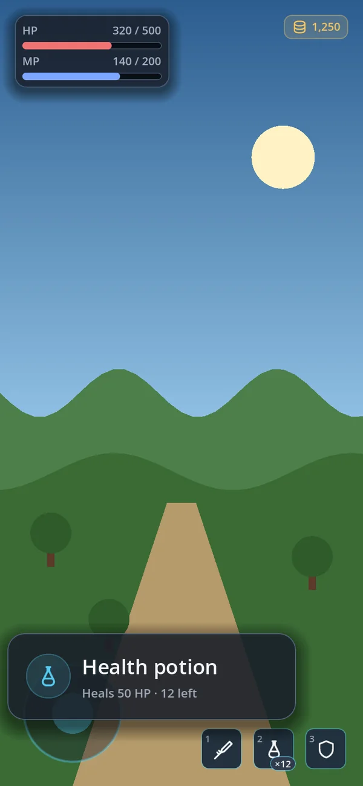
在被點按之處旁邊彈出的資訊卡，一次一張。
繼承 RefCounted
GoPopover.open(slot, GoStyle.item_card(item, false)) GoContextMenu

長按或右鍵彈出選單；手指一移動就取消。
繼承 RefCounted
GoContextMenu.attach(slot, [{"text": "Use"}, {"text": "Drop", "danger": true}]) GoCoachMark

指向真實控制項的引導教學。
繼承 Control
var tour := GoCoachMark.new()
add_child(tour)
tour.start([{"target": bag_button, "title": "Bag", "body": "Your items live here."}]) GoConsole

具指令與歷史紀錄的開發者主控台；正式版中關閉。
繼承 CanvasLayer
var console := GoConsole.new()
add_child(console)
console.register("give", "Grant an item", give_item) 訊息與等待 (12)
GoSnackbar
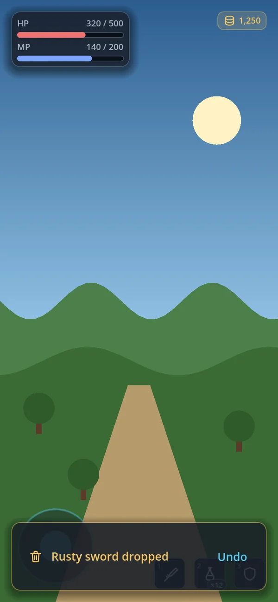
底部訊息，可排隊，也可帶按鈕。
繼承 Node
var snack := GoSnackbar.new()
add_child(snack)
if await snack.post({"text": "Item dropped", "actions": ["Undo"]}) == 0:
restore_item() GoNotice
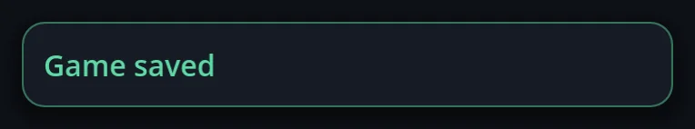
絕不搶占輸入或焦點的提示。
繼承 PanelContainer
var notice := GoNotice.new()
hud.add_child(notice)
notice.show_text("Saved", GoTheme.SUCCESS) GoPromptCard
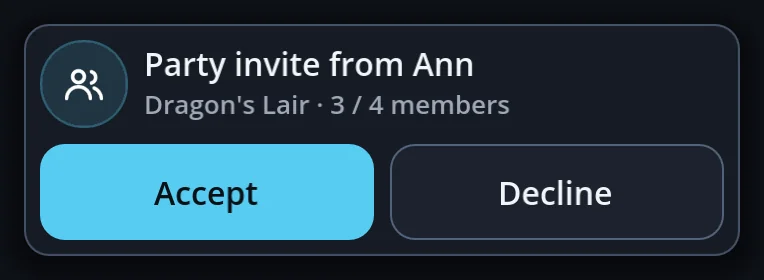
不打斷遊戲的詢問——邀請、交易。
繼承 PanelContainer
var invite := GoPromptCard.new()
invite.set_title("Party invite from Ann")
invite.set_actions([{"text": "Accept", "action": accept, "primary": true}]) GoBanner
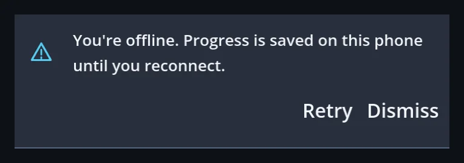
一直留在頁面上直到被處理的訊息。
繼承 PanelContainer
var offline := GoBanner.make("You're offline.", [{"text": "Retry", "action": reconnect}], GoIconSet.WARNING)
page.add_child(offline) GoSpinner
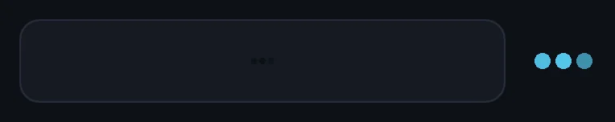
等待指示；把按鈕原地變成轉圈，避免被按兩次。
繼承 Control
GoSpinner.busy(buy_button, true)
await shop.buy(item)
GoSpinner.busy(buy_button, false) GoBadge
未讀圓點、NEW 標籤與 99+，掛在角上。
繼承 PanelContainer
GoBadge.attach(mail_button, unread)
GoBadge.attach(shop_button, 0, "NEW") GoProgress
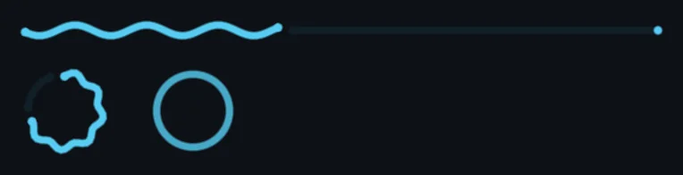
線形或環形進度，波浪或平直；不知總量時為不確定狀態。
繼承 Control
var upload := GoProgress.linear()
upload.value = 0.4
var ring := GoProgress.circular(true) GoLoadingIndicator
會變形的 Material 3 Expressive 等待標記；開啟 reduce_motion 時靜止。
繼承 Control
var wait := GoLoadingIndicator.new()
wait.contained = true
page.add_child(wait) GoRefresh
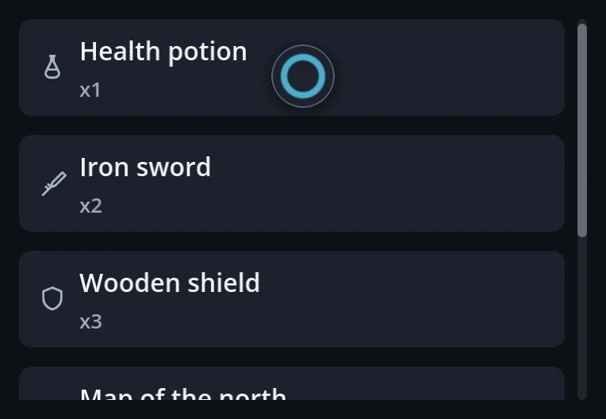
在清單頂端向下拉即可重新整理。
繼承 Control
var refresh := GoRefresh.attach(feed)
refresh.refresh_requested.connect(func() -> void:
await reload_posts()
refresh.finish()) GoStyle.alert
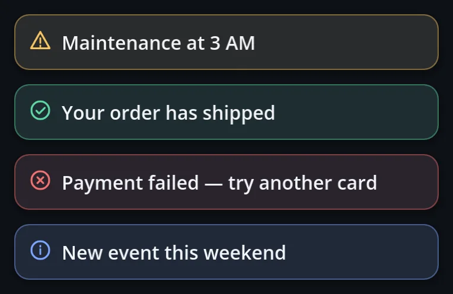
資訊、成功、警告或危險色調的內嵌訊息。
所屬 GoStyle
page.add_child(GoStyle.alert("Maintenance at 3 AM", GoTheme.WARNING)) GoStyle.skeleton · empty_state
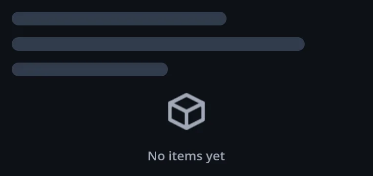
載入時的佔位，以及空清單的提示。
所屬 GoStyle
page.add_child(GoStyle.skeleton(200))
page.add_child(GoStyle.empty_state(GoIconSet.BOX, "No items yet", false)) GoStyle.tooltip_node
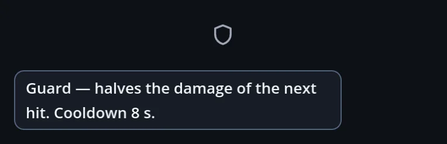
主題樣式的工具提示，不會把單字拆開。
所屬 GoStyle
func _make_custom_tooltip(text: String) -> Object:
return GoStyle.tooltip_node(text) 輸入與選擇器 (12)
GoStyle.line_edit · textarea
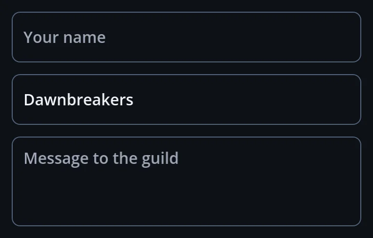
單行與多行文字方塊。
所屬 GoStyle
var nickname := GoStyle.line_edit("Your name")
var note := GoStyle.textarea("Message", 4) GoField
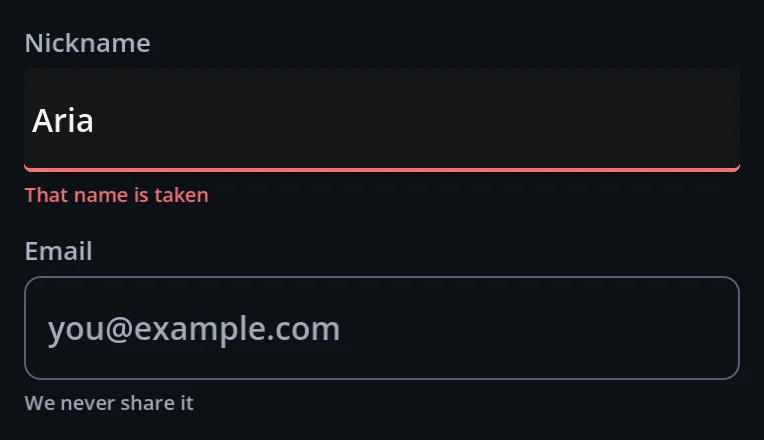
標籤、控制項與提示，錯誤顯示在出錯的欄位下方。
繼承 VBoxContainer
var field := GoField.make("Nickname", GoStyle.line_edit(), "3–12 letters", false)
field.set_error("That name is taken") GoInputGroup
把輸入框與按鈕焊接成一個整體。
繼承 HBoxContainer
var chat := GoInputGroup.make(GoStyle.line_edit("Message"), {"suffix": GoStyle.button("Send", send)}) GoCombobox
不僅從開頭、也能在名稱中間搜尋的選擇器。
繼承 Button
var friend := GoCombobox.make(friends, -1, "Find a friend")
friend.picked.connect(invite) GoCodeInput
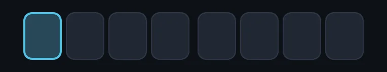
以格子顯示的優惠碼與禮物碼；貼上與輸入法照常可用。
繼承 VBoxContainer
var coupon := GoCodeInput.make(12, 4)
coupon.completed.connect(redeem) GoStyle.select · dropdown
下拉清單，以及開啟選單的按鈕。
所屬 GoStyle
var quality := GoStyle.select(["Low", "Medium", "High"])
var sort := GoStyle.dropdown("Sort", ["Newest", "Price"], sort_by) GoStyle.slider
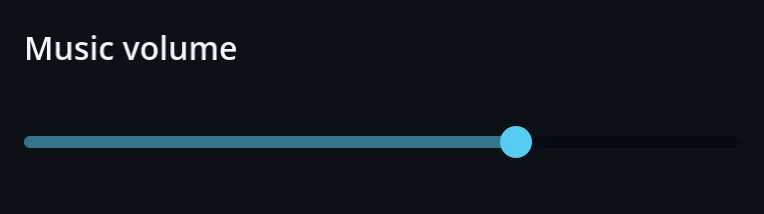
主題樣式的滑桿。
所屬 GoStyle
var volume := GoStyle.slider(0.0, 1.0, 0.05)
volume.value_changed.connect(set_volume) GoRangeSlider
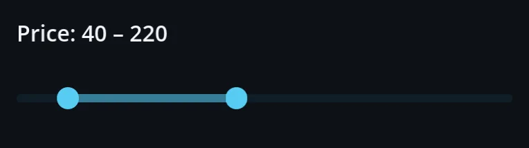
兩個不會交叉的滑鈕——價格或等級範圍。
繼承 Control
var price := GoRangeSlider.make(0.0, 500.0, 40.0, 220.0, 10.0)
price.change_ended.connect(func(low: float, high: float) -> void: refilter(low, high)) GoDatePicker
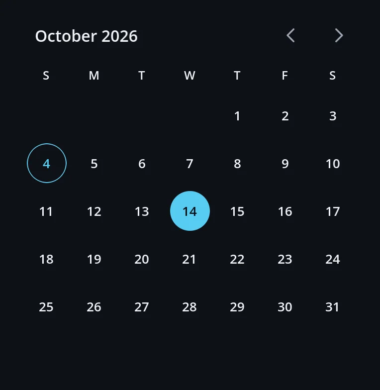
點選的月曆；開啟 range_mode 可選日期範圍。
繼承 Container
var stay := GoDatePicker.make()
stay.range_mode = true
stay.range_picked.connect(func(start: Dictionary, end: Dictionary) -> void: book(start, end)) GoTimePicker
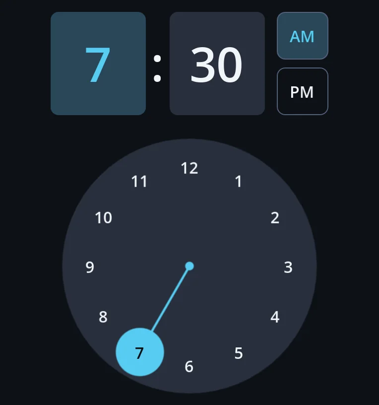
時鐘錶盤：先選小時再選分鐘；12 或 24 小時；方框上可用上下鍵。
繼承 Container
var alarm := GoTimePicker.make(7, 30, func(hour: int, minute: int) -> void: set_alarm(hour, minute))
alarm.use_24h = true GoWheelPicker
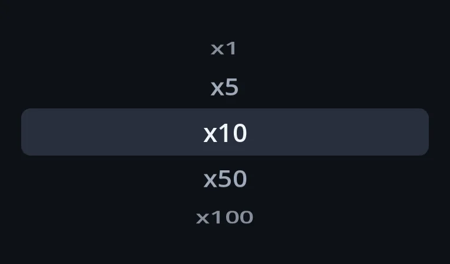
會轉動並把一項停在中間色帶上的滾輪。
繼承 Control
var amount := GoWheelPicker.make(["x1", "x5", "x10", "x50"], 0, set_amount)
row.add_child(amount) GoStepper
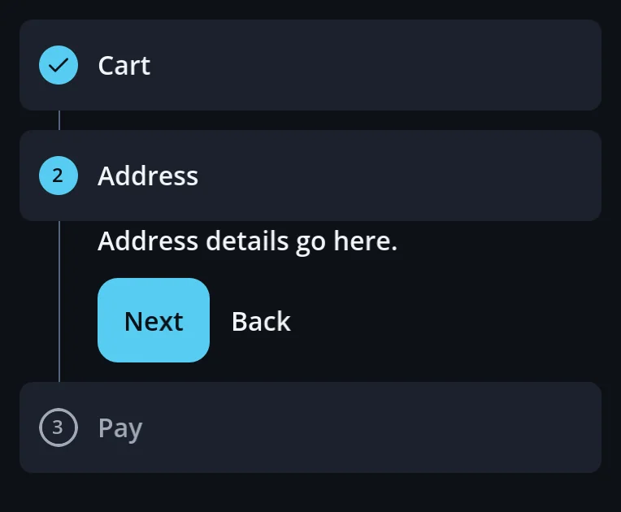
附「下一步／上一步」的編號步驟，縱向或橫向排列。
繼承 VBoxContainer
var checkout := GoStepper.make([{"title": "Cart", "content": cart}, {"title": "Pay", "content": pay}])
checkout.finished.connect(place_order) 清單、卡片與資料 (8)
GoStyle.list_row · list_button
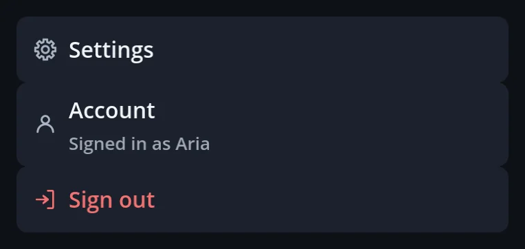
附圖示、標題、摘要與尾端標記的清單列。
所屬 GoStyle
page.add_child(GoStyle.list_button(GoIconSet.SETTINGS, "Settings", open_settings, Color.TRANSPARENT, "", false)) GoListView
成千上萬列，只建立可見的列。
繼承 GoScroll
var feed := GoListView.make(10000, 72.0, func(index: int) -> Control: return post_row(posts[index]))
feed.end_reached.connect(load_more) GoReorderList
用拖曳控點或長按拖動來排序的列。
繼承 Container
var queue := GoReorderList.make([intro_row, theme_row, boss_row])
queue.reordered.connect(func(from: int, to: int) -> void: songs.insert(to, songs.pop_at(from))) GoSwipeRow
側滑即可刪除或封存的列；清單照常捲動。
繼承 Container
inbox.add_child(GoSwipeRow.wrap(mail_row, {"icon": GoIconSet.TRASH, "text": "Delete",
"tone": GoTheme.DANGER, "action": delete_mail})) GoTable
可排序的表頭與可選取的列；數字按數值排序。
繼承 VBoxContainer
var board := GoTable.make(["Name", {"text": "Score", "numeric": true}], [["Ann", 9124], ["Ben", 91240]])
board.row_selected.connect(open_profile) GoStyle.card · item_card
卡片，以及所選物品的詳細卡。
所屬 GoStyle
var card := GoStyle.card()
card.add_child(GoStyle.label("Daily quest"))
popup.add_child(GoStyle.item_card({"title": "Rusty sword", "subtitle": "Common"})) GoStyle.avatar
圓形中的首字母或圖片。
所屬 GoStyle
row.add_child(GoStyle.avatar("AK", 40)) GoStyle.label
使用從 micro 到 title 的七種文字角色之一的文字。
所屬 GoStyle
page.add_child(GoStyle.label("Level 12", GoTheme.ROLE_TITLE))
page.add_child(GoStyle.label("Next level in 340 XP", GoTheme.ROLE_CAPTION, GoUi.color(GoTheme.MUTED))) HUD 與遊戲元件 (11)
GoBar
顯示數值、分數或百分比的 HP、MP、XP 條。
繼承 Control
var hp := GoBar.new()
hp.label_text = "HP"
hp.set_values(320, 500) GoSlot
快捷欄格：圖示、數量、冷卻與快捷鍵集於一面。
繼承 Button
var potion := GoSlot.new()
potion.icon_name = GoIconSet.POTION
potion.quantity = 12
potion.start_cooldown(5.0) GoSlotGrid
背包網格；物品可在格子間拖動。
繼承 HFlowContainer
var bag := GoSlotGrid.new()
bag.set_cell(0, {"icon": GoIconSet.POTION, "quantity": 12}) GoJoystick
虛擬搖桿——固定、跟隨拇指或相對模式。
繼承 Control
var pad := GoJoystick.new()
pad.mode = GoJoystick.Mode.FOLLOW
pad.moved.connect(func(direction: Vector2) -> void: player.move(direction)) GoKbd
讀取真實按鍵綁定的鍵帽，改鍵後提示也不會出錯。
繼承 HBoxContainer
hint.add_child(GoKbd.for_action(&"interact")) GoChoiceColumn
點一下即可選的短直列——召喚清單；遊戲可標記任意多列。
繼承 Control
var animals := GoChoiceColumn.make(["Hen", "Cat", "Dog", "Pig", "Cow"], 4, summon)
animals.set_selected(2, true)
side_bar.add_center(animals) GoRewardCalendar
每日簽到獎勵；只能點今天。
繼承 VBoxContainer
var attendance := GoRewardCalendar.make(days, claimed_until)
attendance.claimed.connect(func(day: int) -> void: server.claim_day(day)) GoRadar
屬性五邊形，以虛線比較裝備。
繼承 Control
var stats := GoRadar.make({"STR": 0.85, "AGI": 0.5, "INT": 0.3, "VIT": 0.7, "LUK": 0.45})
stats.set_compare(with_new_sword) GoDonut
以扇形顯示占比，圖例不僅有顏色也有文字。
繼承 Control
var share := GoDonut.make([{"label": "Physical", "value": 620}, {"label": "Magic", "value": 340}])
card.add_child(share.legend()) GoZoomView
雙指、滾輪或點兩下縮放地圖；在邊界內平移。
繼承 Control
var map := GoZoomView.wrap(world_map, 4.0)
map.custom_minimum_size.y = 320
page.add_child(map) GoStyle.hud_panel · overlay_panel
浮在遊戲畫面上的面板，讓文字在任何畫面上都清晰可讀。
所屬 GoStyle
var bars := GoStyle.hud_panel()
var pill := GoStyle.overlay_panel() 外觀與系統 (8)
GoUi · GoThemePresets
從預設（預設、科幻、中世紀、Material、兒童、漫畫）中選擇一種；顏色與尺寸從 Token 讀取。
繼承 RefCounted
GoUi.use_preset(GoThemePresets.MATERIAL_LIGHT)
var accent := GoUi.color(GoTheme.ACCENT)
var gap := GoUi.metric(GoTheme.GAP) GoConfig
一個資源裝下所有設定，外掛更新後仍保留。
繼承 Resource
GoUi.config.reduce_motion = true
GoUi.config.container_alpha = 1.0
GoUi.refresh() GoSkin

由程式繪製的形狀——標籤、槽位、搖桿與新元件——依你的風格。
繼承 Resource
class_name MySkin
extends GoSkin
func banner_box() -> StyleBox:
return surface_box(GoTheme.BOX_CARD) GoIconSet · GoGameIcons
依名稱使用圖示：預設集、187 個遊戲圖示或你自己的 SVG。
繼承 Resource · RefCounted
GoUi.config.icons = GoGameIcons.icon_set()
var gear := GoUi.icons().node(GoIconSet.SETTINGS, 24) GoStyleBoxCut · GoStyleBoxBracket · GoStyleBoxMedieval
供你的面板使用的切角、括號與鍛造外框。
繼承 StyleBox
var face := GoStyleBoxCut.new()
face.cut = 8
panel.add_theme_stylebox_override(&"panel", face) GoSafeArea · GoScale
避開瀏海、手勢列與鍵盤的區域，以及以 dp 計的斷點。
繼承 Control · RefCounted
var usable := GoSafeArea.usable_rect(get_window())
var size_class := GoScale.breakpoint_for_dp(minf(usable.size.x, usable.size.y)) # by the short side GoFeedback
把音效提示與觸覺回饋交給你自己的音訊；gohud 不附帶聲音。
繼承 RefCounted
GoFeedback.sound_handler = func(cue: String) -> void: audio.play_cue(cue)
GoFeedback.haptic_handler = func(ms: int, amplitude: float) -> void: Input.vibrate_handheld(ms, amplitude) GoBackPolicy
目前由誰接管 Android 返回鍵與 Esc，在視窗之間共用。
繼承 RefCounted
GoBackPolicy.acquire(get_tree())